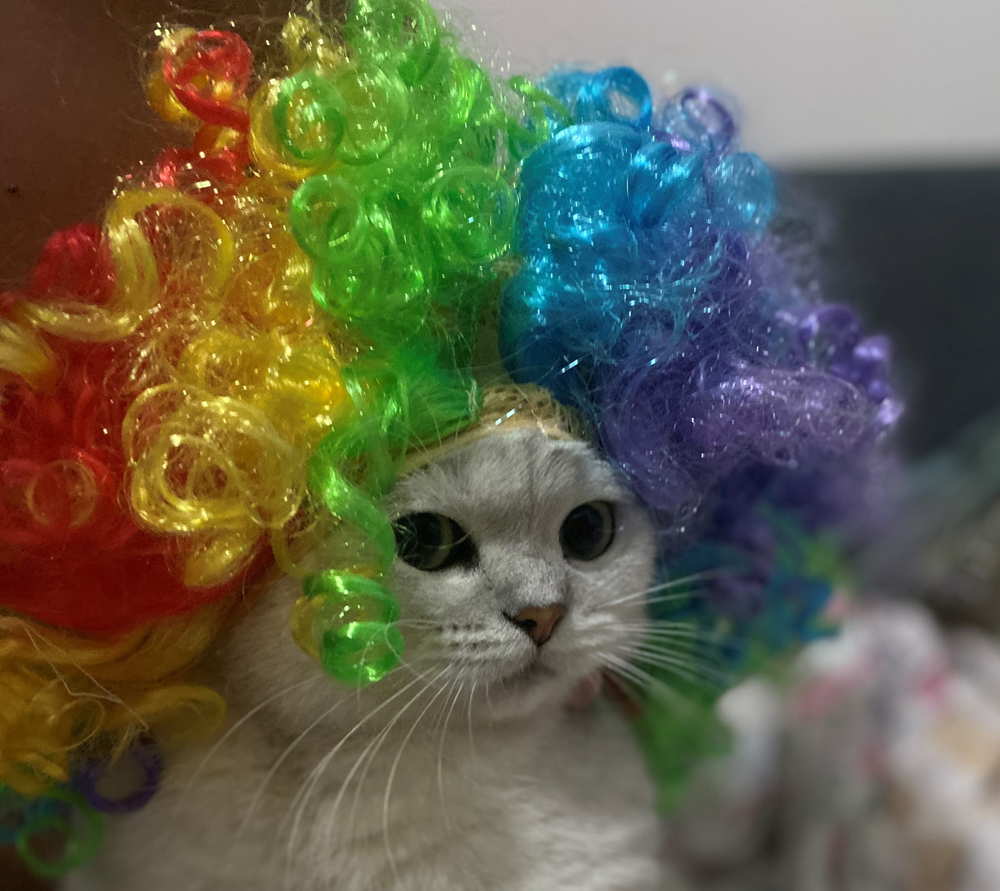
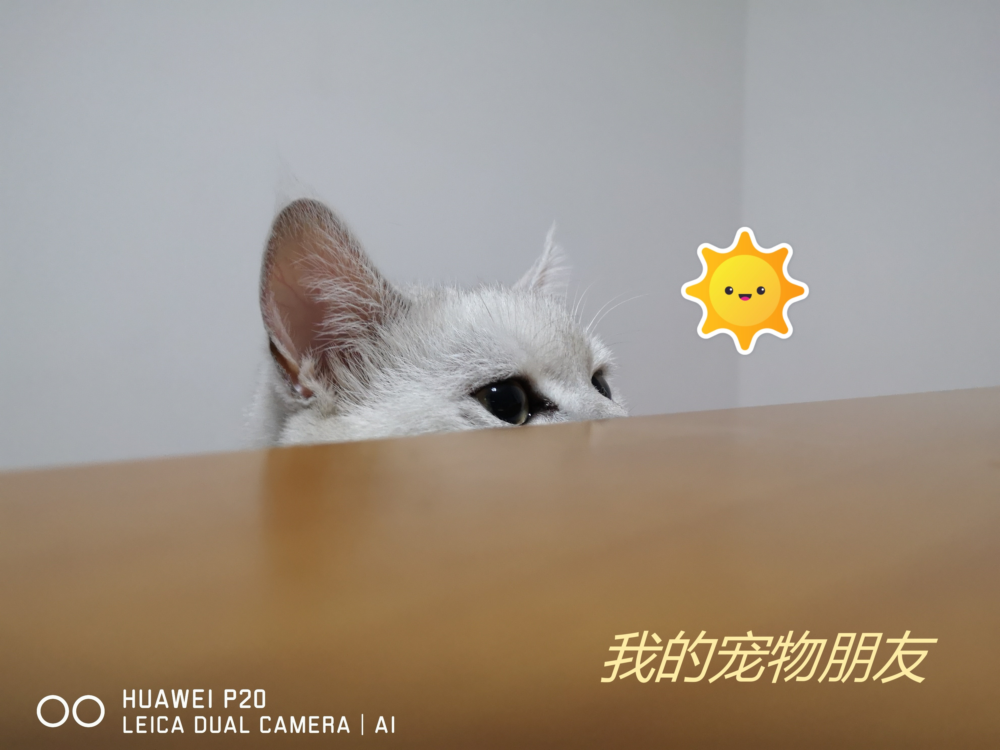
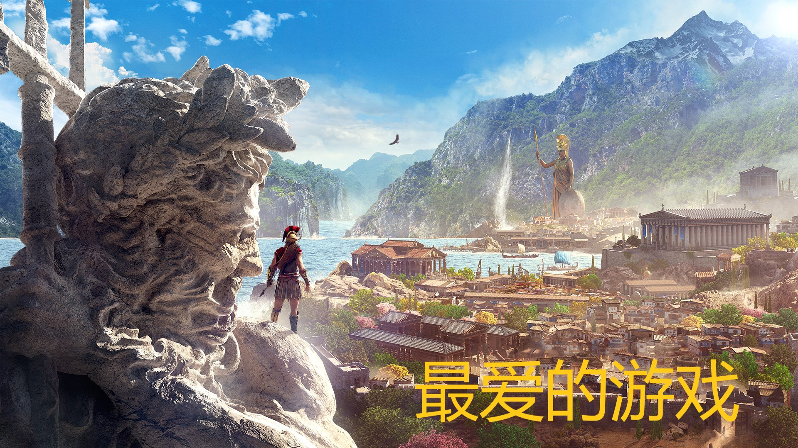
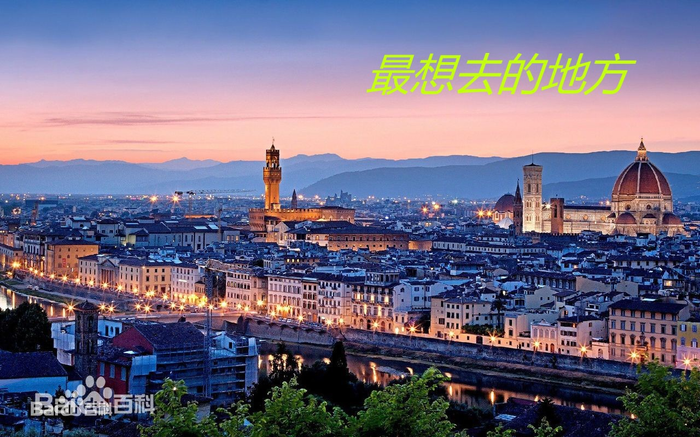
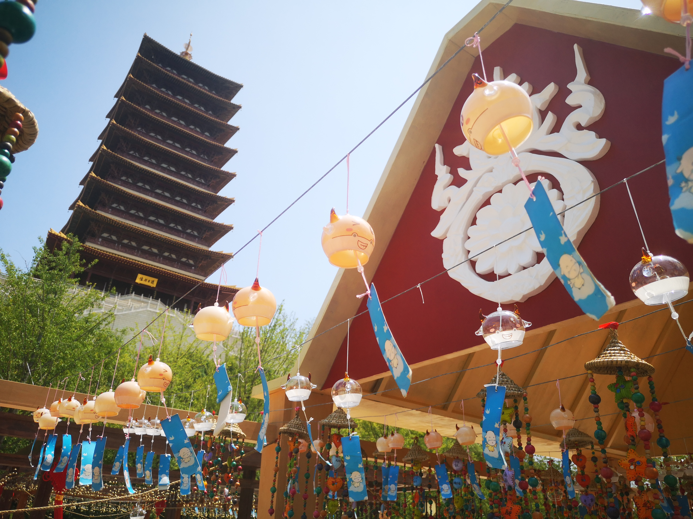

关于我自己
我是一名来自土木工程专业的大四学生，在临近毕业的大四，接触到了网页设计入门这门选修课，正好利用我所学到的一点点皮毛来做一个属于我的网页。
我的主要想从四个方面来聊聊我自己，分别是下面的“宠物”、“游戏”、“最想去的地方”以及“未来”。




关于我的宠物猫，它有一个最老土但是最顺口的名字“喵喵”，在我还在读高中的时候，我拿上大学的姐姐在放寒假时把只有一个月大的它领回了家，他是一只英短银渐层。那个时候我每天最快乐的时光就是在学习闲暇与它玩耍，转眼间姐姐大学毕业出去工作，我也成为了一名大学生，每年只有放假的时候才可以回到家与它相伴。
说到我最喜欢的游戏，毋庸置疑的就是《刺客信条》系列作品，在期中作业时我就用网页介绍过这个这个系列，融合进历史的剧情和堪称“旅游模拟器”式的游戏画面让我对这个系列情有独钟。
我最想去旅游的一个城市是位于意大利的佛罗伦萨，佛罗伦萨位于亚平宁山脉中段西麓盆地中。15-16世纪时佛罗伦萨是欧洲最著名的艺术中心，以美术工艺品和纺织品驰名全欧。欧洲文艺复兴运动的发祥地，给世人留下了无数重要历史建筑和艺术珍品，至今弥漫着文艺复兴时期的浓重气息。
最后是关于我的未来，马上就要毕业了，我希望将来我能坚持在土木工程这个行业中奋斗下去，在未来实现我的旅游梦想。